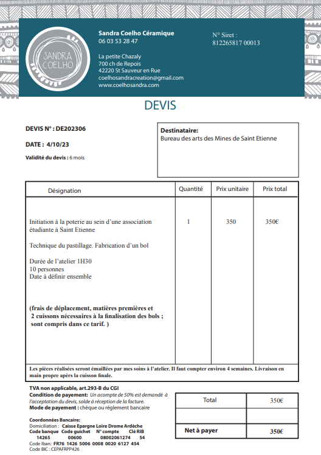

En plus de faire de grands évènements, nous avons voulu mettre en place des petits ateliers artistique pour une dizaine de personnes. Nous avons réfléchie à un atelier sérigraphie, un atelier poterie et un atelier découpage de citrouille (Halloween).
Nous avons contacté plusieurs ateliers de poterie sur Saint-Etienne pour effectuer un atelier à la ME. Nous avons contacté l'atelier de céramique Sandra Coelho qui nous a proposé un devis.
Atelier de poterie Sandra Coelho Le prix étant élevé et conséquent pour le budget du BDA, nous avons décidé de voir avec la COME pour placer cette évènement dans la semaine Bien-être (soit la semaine du lundi 20 novembre). L'évènement aurait alors été à la charge de la ME et non du BDA. Lors du COGE, l'administration de la ME était très intérréssé par cette atelier. Malheureusement, l'atelier de poterie n'était pas disponible avant fin décembre voir janvier.
Nous n'avons pas contacté d'autres ateliers par la suite car nous étions assez pris. Si l'idée de l'atelier poterie refait surface, il est possible de contacter l'atelier Renc'Art situé à 15min de la ME.
Atelier poterie n°2Le mandat 2022-2023 a organisé une perm BDA juste avant les vacances d'octobre (et donc juste avant Halloween) sur le thème d'Halloween. La perm était vraiment bien et beaucoup de gens l'ont apprécié. Avant la perm a eu lieu un atelier tranformation de citrouille en citrouille d'Halloween. L'atelier était organisé par le BDA pour une dizaine de personne. Nous avions prévue de refaire cette perm avec le thème "El dia de los muertos". Mais le BDE avait déjà sg le thème pour leur soirée. On est donc partie sur la perm international avec le BDI, l'atelier citrouille est alors passé à la trappe. L'idée peut être reconduite, plusieurs personnes nous avait demandé si l'atelier aurait quand même lieu même sans la perm halloween.Mais à ce moment là on était une semaine avant Halloween, on était assez pris par l'organisation de la perm International.
L'idée d'un atelier sérigraphie et venu en même temps que l'idée de l'atelier poterie. Les membres du BDA était plus intérréssé par la poterie. De plus, nous avons très vite une réponse positive de la poterie avec un devis (puis on a appris que ce n'était pas décembre voir janvier), l'atelier sérigraphie a été mis de côté.